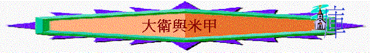

背景
米甲是誰(撒上14:49)？
一.彼此的付出
1.在撒上18:17-19中，掃羅對大衛有什麼承諾？最終有什麼結果？
2.撒上18:20-30又發生了什麼事？
3.米甲對大衛有什麼感覺？你猜想為何米甲愛大衛？他欣賞他什麼？
4.妳今天又欣賞妳的配偶什麼事情？
5.你又認為大衛是否愛米甲？他又為她付出什麼？
6.試分享妳的配偶為妳付出的事情？
7.撒上19:11-17又發生了什麼事？ 你認為米甲愛大衛嗎？ 又為他付出什麼？
8.妳的配偶又欣賞妳為他付出什麼事？
二.大衛的接納
1.撒下25:43-44又發生了什麼事？ 你若是大衛，知道了自己的配偶現是另一人的配偶,你有什麼感受？
2.申24:2-4在以上的情況下有什麼指引？
3.撒下3:12-16又發生了什麼事？ 你欣賞大衛有此表現嗎？為什麼？
4.大衛要重新接納米甲為妻,你認為有困難嗎？
5.試分享妳在接納的功課上之學習
三.米甲的輕視(撒下6:16-22)
1.大衛在神面前作了什麼事？
2.米甲有什麼回應？
3.大衛回家後，有什麼美好的心意對自己的家人？米甲卻有什麼回應？從米甲的回應中，你認為她有什麼不好的地方是破壞兩人的關係？
4.你有沒有試過因不明白對方的行為而有不欣賞／不尊重的表現？
5.大衛又對米甲有什麼回應？ 他回應背後想表達什麼意思/感受？
6.米甲最後有沒有兒女？為什麼？ 猜想大衛與米甲日後的關係會否是良好？
7.若要建立夫婦良好的關係，你認為大衛可以怎麼處理以上的事情會更好？
8.若要使妳日後的婚姻更美滿，妳與妳的配偶又可以努力作什麼事？